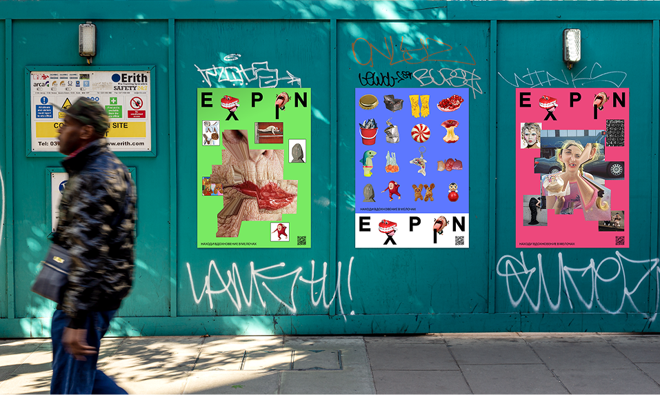
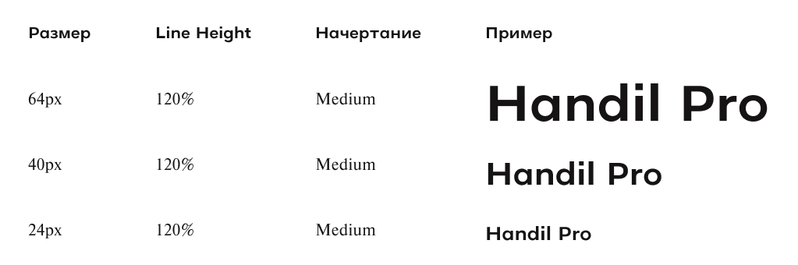
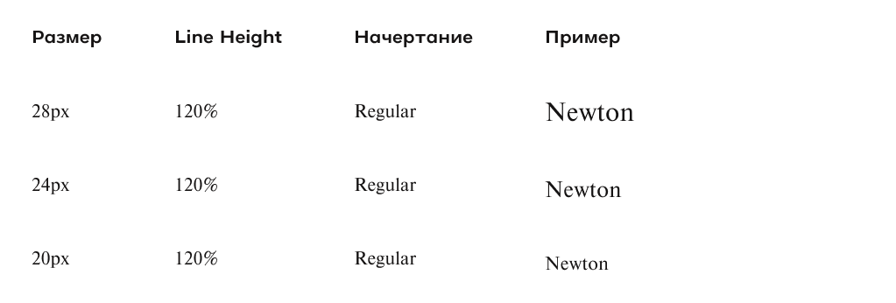
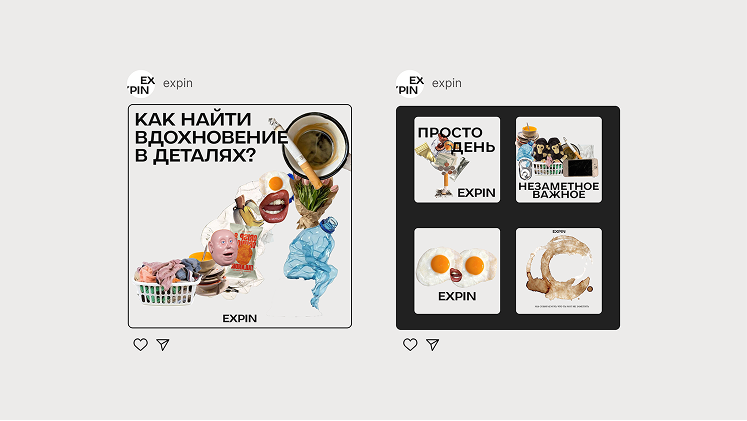
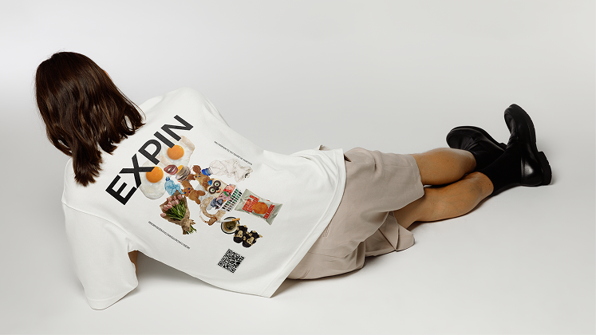

О нас
EXPIN — медиа для вдохновения и развития насмотренности, которое помогает замечать необычное в повседневных вещах. Мы собираем наблюдения, образы, статьи и подборки, чтобы тренировать внимательный взгляд и учиться видеть мир иначе.
Миссия медиа — показать, что вдохновение в деталях вокруг: в странностях, мелочах и привычных объектах, если смотреть на них осознанно и без спешки.
Ценности
- Вдохновлять и быть добрыми к людям
- Не предавать свои идеалы
- Простота
- Любопытство к повседневности
Метафора
В основе визуальной метафоры EXPIN — идея вдохновения, спрятанного в мелочах. Мы намеренно увеличиваем и искажаем повседневные фрагменты, вырываем их из привычного контекста и собираем в новые образы. Так обычные детали перестают быть фоном и становятся источником смысла: насмотренность превращает простое наблюдение в осознанное вдохновение.


Логотип
Логотип построен на шрифте Handil Pro с обводкой. Чёткое, прямое начертание уравновешивает экспериментальный визуальный контент бренда. Благодаря этому логотип остаётся нейтральным фоном для образов и метафор, не перетягивая внимание на себя.

Цвета логотипа
Цвета
Основная палитра

Пример применения палитры в городской среде / постерах.
Базовая палитра
Типографика
В айдентике медиа используется сочетание двух шрифтов с разным характером.
Handil Pro используется для заголовков. Это гротеск с чётким и уверенным начертанием.
Newton Regular — антиква для наборного текста. Хорошо читается в длинных текстах и создаёт ощущение вдумчивого, медленного чтения.
Контраст гротеска и антиквы подчёркивает идею бренда: сочетание эксперимента и внимания к деталям, визуального акцента и спокойного наблюдения.


Изображения
Визуальный язык EXPIN строится на работе с повседневными изображениями и их переосмыслении. Мы используем реальные фотографии и фрагменты реальности, но намеренно нарушаем привычную логику восприятия.
Графика может собираться из множества деталей в один образ или, наоборот, оставаться набором разрозненных элементов без очевидного целого.

Пример графики созданной из деталей
Основные принципы
- Повторение одного и того же фрагмента
- Искажения, смещения, растяжения
- Сочетание реалистичных деталей в странных, абсурдных композициях
- Несовершенство как часть образа.
- Изображения, подобранные по такому принципу останавливают взгляд и предлагают рассмотреть деталь внимательнее. Это поддерживает основную идею бренда: вдохновение рождается из наблюдения и странностей повседневности.

Пример собранного образа их привычных вещей.